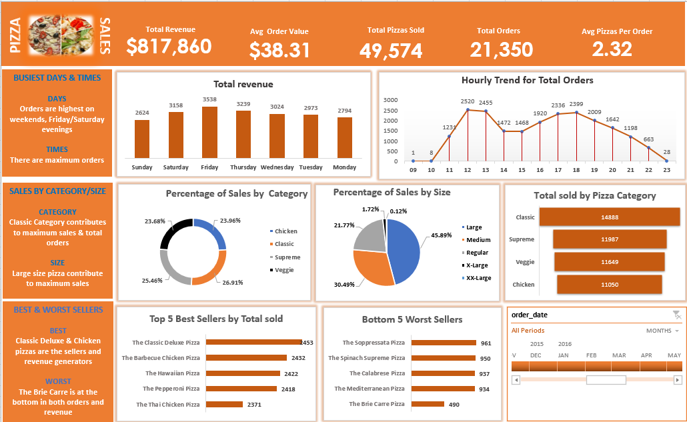
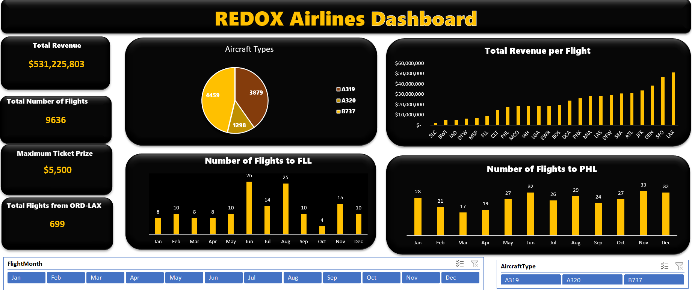
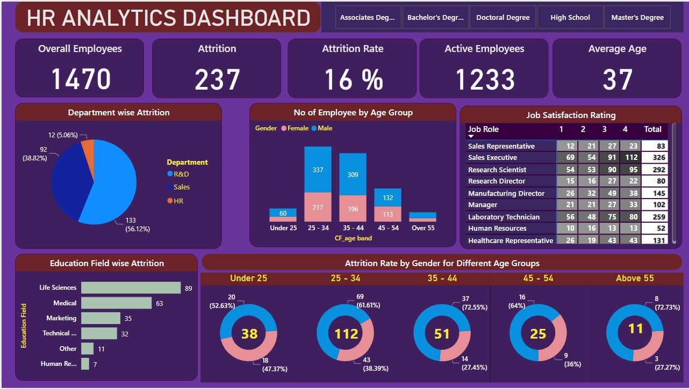
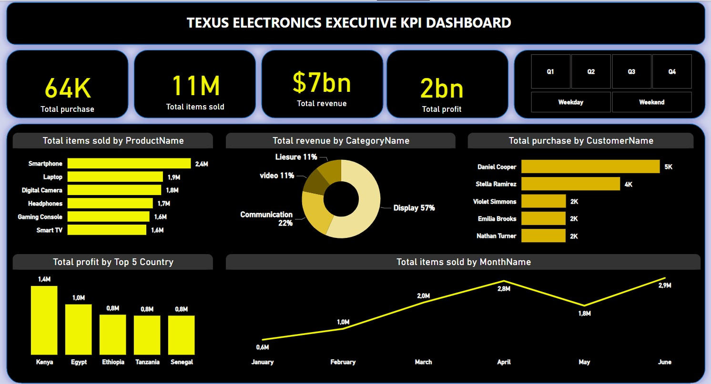
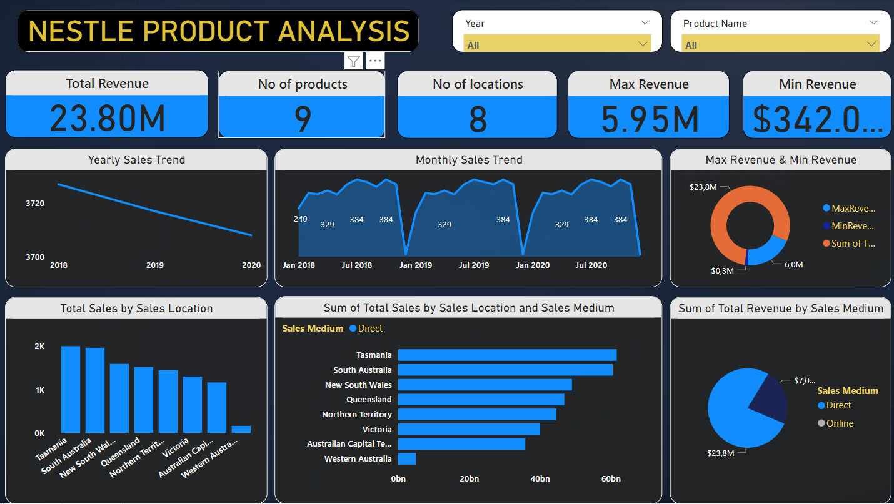
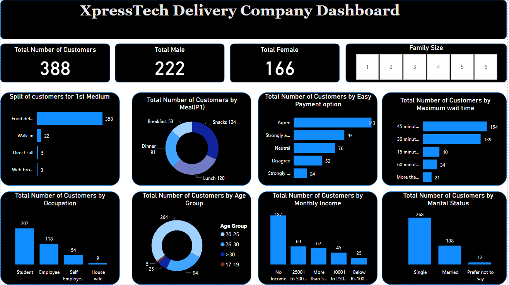
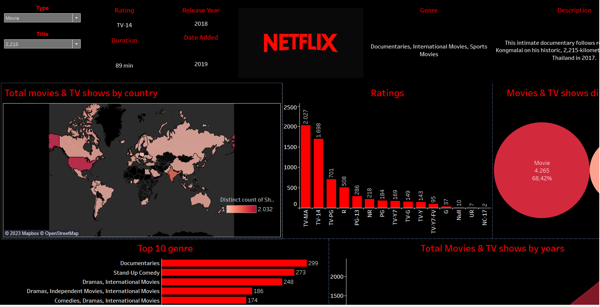
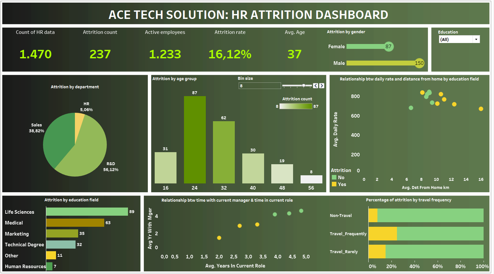

In the course of this project, I employed SQL to cleanse housing
datasets. This involved tasks such as column renaming for improved
clarity, standardization of date formats, address population
through parcel ID utilization, segregation of addresses (Address &
Column) into distinct columns, and the removal of redundant or
unused columns for enhanced dataset efficiency.

In this comprehensive project, I employed SQL to meticulously
analyze a rich dataset from a prominent Pizza company. The
investigation encompassed extracting pivotal insights, including
the total revenue, average order value, total pizzas sold, overall
order count, average pizzas per order, and daily sales trends.
Furthermore, the analysis involved identifying the top 5 best and
worst sellers. To enhance interpretability, these findings were
subsequently explored and visually presented using advanced tools
like Excel and Power BI.
In this project, I employed PostGreSQL to analyze the educational
fundraising dataset. The investigation uncovered essential
insights, including total donations, gender-specific donation
patterns, aggregated donation metrics, and distribution by job
field. Additionally, the analysis identified the top ten states
with the highest donation counts. This comprehensive exploration
provides a detailed understanding of the fundraising landscape,
aiding strategic decision-making for educational initiatives.
In this project, I utilized PostgreSQL to conduct a comprehensive
analysis of an international supermarket dataset, revealing
crucial metrics such as total project quantity, average prices by
product category, popular products in each city, New York-specific
quantities, highest-priced items, state-wise total revenue,
revenue breakdown by category, and identification of the city with
the highest order volume. This detailed examination offers
valuable insights for strategic decision-making and operational
optimization.

In the scope of this project, I employed Microsoft Excel to
meticulously analyze a dataset originating from a Pizza company.
The objectives included extracting essential metrics such as total
revenue, average order value, total pizzas sold, overall order
count, average pizzas per order, daily sales trends,
identification of the top 5 best and worst sellers, percentage
distribution of sales by pizza category, percentage distribution
of sales by pizza size, and the comprehensive tally of pizzas sold
categorized by pizza type.

In this project, I leveraged Microsoft Excel to conduct a
comprehensive analysis of the Redox Airline dataset. The
objectives encompassed deriving key metrics such as Total Revenue,
the overall number of flights, categorization of flights based on
Aircraft type, computation of Total Revenue per flight,
identification of flight frequencies to specific airports, and
determination of the maximum ticket price.

In this project, I employed Power BI to develop a robust HR
analytics dashboard. The dashboard showcases department-wise
attrition, employee distribution across age groups, job
satisfaction ratings, attrition categorized by education field,
education-level-specific attrition rates, and gender-based
attrition rates across various age brackets. This comprehensive
visualization aids in strategic workforce management and
decision-making

In this project, Power BI was employed to thoroughly explore the
Texus Electronics dataset, revealing critical insights such as
customer purchases categorized by country, overall revenue, and
total profit across the top five countries. Additionally, the
analysis included metrics such as total items sold and an overview
of customer purchase patterns. This comprehensive exploration
provides valuable insights for strategic decision-making and
optimizing business operations.

In this project, Power BI was utilized to meticulously analyze the
NESTLE products dataset, revealing key metrics such as total
revenue, quantity of products sold, number of locations, maximum
and minimum revenue, yearly and monthly sales trends, and a
comprehensive breakdown of sales by location and sales medium.
This thorough exploration provides valuable insights into the
company's sales dynamics, enabling informed decision-making and
strategic planning.

In this project, Power BI facilitated an extensive analysis of the
XpressTech Delivery company dataset, revealing crucial insights.
The examination covered total customer count, gender distribution,
family sizes, occupation segmentation, monthly income categories,
marital status diversity, and age group differentiations. This
holistic approach provided a nuanced comprehension of customer
demographics and behavior within the XpressTech clientele. The
derived insights play a pivotal role in informing strategic
decision-making and steering targeted business enhancements for
optimal performance and customer satisfaction.

In the course of this project, I leveraged Tableau for an in-depth
exploration of the Netflix dataset. Key insights sought included
identifying the top 10 movie genres, analyzing the distribution of
movies and TV shows by year, examining the overall distribution of
movies and TV shows, evaluating ratings across various TV shows,
investigating the release year, duration, and date added
attributes, and understanding the distribution of movies and TV
shows by country. Additionally, to enhance user interactivity, a
slicer feature was incorporated, allowing users to selectively
choose the title of a movie or TV show.

In this project, I leveraged Tableau to meticulously explore
AceTech Solutions' dataset, revealing crucial metrics—Total
Employees, attrition rate, active employees, average age,
departmental attrition patterns, employee demographics,
educational field-based attrition, and insights into employee
relationships. The analysis further delved into attrition
correlation with travel frequency. This thorough exploration
yields a nuanced understanding of workforce dynamics, offering
actionable insights for strategic workforce management and
organizational development, ultimately contributing to informed
decision-making within the company.

This project is divided into two sections, A and B. In Section A,
I contributed significantly during a 6-month internship program,
utilizing Python to create diverse plots and analyze data from our
excavation site in Singapore. Section B involved leveraging Python
to analyze data from an Indian company, focusing on understanding
gender-based purchasing power, identifying top-selling products,
and gaining insights into customer occupational profiles. These
analyses contribute valuable insights for strategic
decision-making, providing a holistic perspective on diverse
datasets and enhancing my analytical capabilities